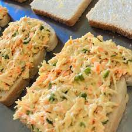

Venha conferir essa receita, super simples e fácil de fazer!!! Com apenas 20$ consegue fazer 5 unidades ou mais.
Descrição da Receita: Sanduíche Natural de Frango, simples, saudável e saboroso!

Ingredientes
1kg de peito de frango
1 cenoura
1 pacote de pão fatiada (integral ou branco)
1 alface
1 lata de milho
1 pote de requeijão
Modo de Preparo
Em uma panela de pressão, coloque o frango e temperos (de acordo com seu gosto,e o que utiliza para temperar), cubra com aguá;
obs: uns 15 minutos na pressão;
Em seguida, em um recipiente coloque o milho e a cenoura ralada;
Abra o pacote de pão, depois lave bem as folhas de alface e já coloque dentro do pão;
Quando o frango estiver pronto, retire a água e tampe novamente a panela, pois sacudindo a panela o frango desfia;
Com o frango desfiado, coloque ele no recipiente do milho e cenoura, em seguida adicione aos poucos o requeijão e vá mexendo até que
fique bem coberto os ingredientes pelo requeijão
E por fim, adicione essa mistura dentro do pão e feche, seu sanduíche natural está pronto para comer!!